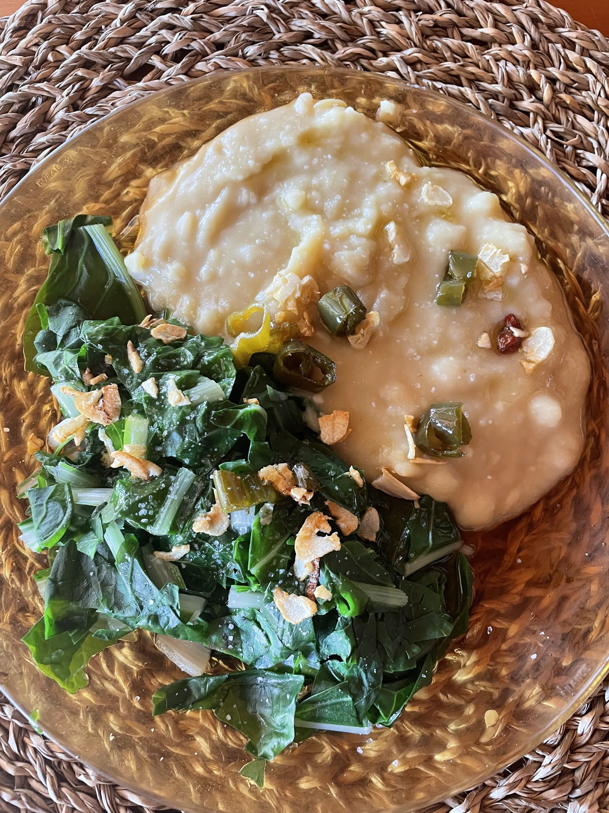

Fave spezzate
Ingredienti
×
- fave secche
- sedano
- pomodoro
- cipolla
- olio
- sale
- bietola
- aglio
- peperoncino

Preparazione
Passo 1
Si mettono fave secche a bagno tutta la notte. L’indomani si leva solo il cappuccio (la pelle di sopra, non tutta la pelle).
Passo 2
Si mettono in una pentola con sedano e pomodoro a quadrati, cipolla tagliata lunga, olio e sale.
Passo 3
Si fa cuocere finché è ben cotto e l’acqua è spessa, fino a ottenere un purè.
Passo 4
Servire con bietola lessata e ripassata con olio, aglio e peperoncino.
Consigli
Se aggiungiamo acqua, metterla calda, sennò si interrompe la cottura.